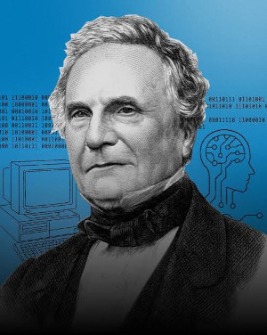
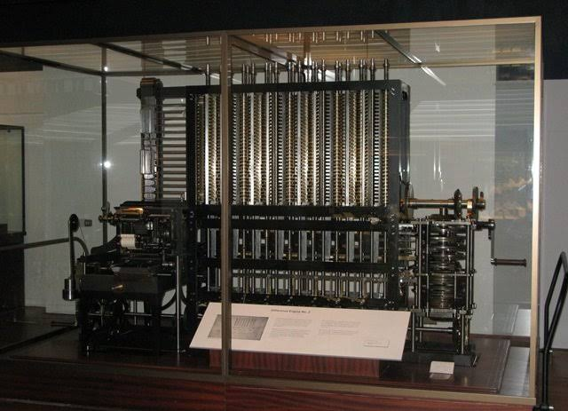
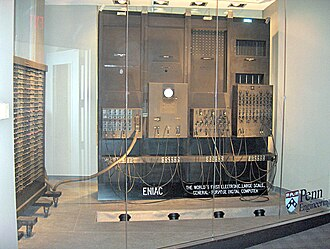
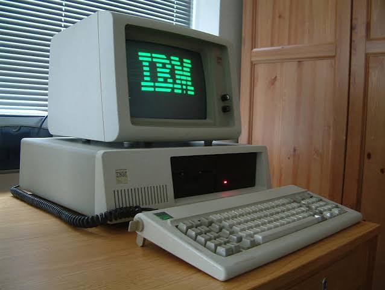
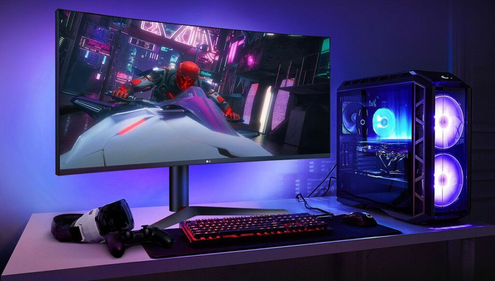
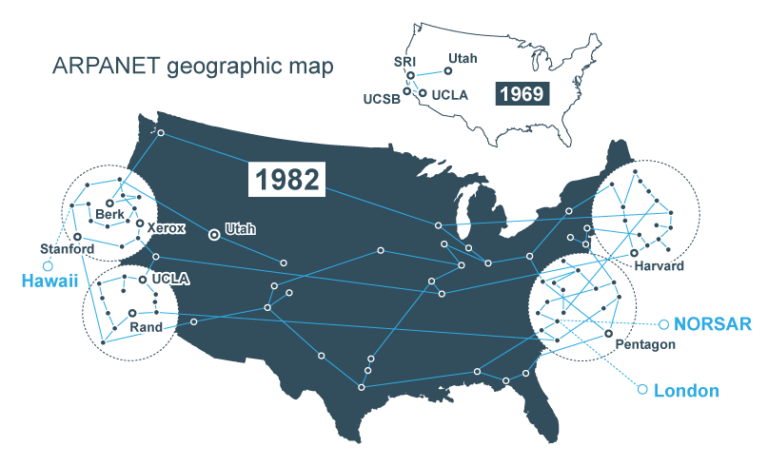

a criação dos computadores
A história dos computadores começou com a necessidade de facilitar os cálculos e resolver problemas matemáticos. Antigamente, as pessoas utilizavam instrumentos como o ábaco para realizar operações. Com o passar do tempo, foram criadas máquinas de calcular cada vez mais avançadas, contribuindo para o desenvolvimento dos computadores modernos.No século XIX, o matemático inglês Charles Babbage desenvolveu projetos de máquinas mecânicas que são considerados importantes para a história da computação. Por esse motivo, ele é conhecido como o pai do computador. Ada Lovelace, que trabalhou com suas ideias, ficou conhecida por desenvolver um dos primeiros algoritmos destinados a ser executados por uma máquina.



ENIAC o primeiro computador
O ENIAC foi um dos primeiros computadores eletrônicos digitais de uso geral da história. Seu nome vem da expressão em inglês Electronic Numerical Integrator and Computer, que significa Integrador Numérico Eletrônico e Computador. Ele foi desenvolvido nos Estados Unidos durante a Segunda Guerra Mundial, por uma equipe liderada pelos engenheiros John Presper Eckert e John Mauchly, e ficou pronto em 1945, sendo apresentado publicamente em 1946. O ENIAC ocupava uma sala inteira, pesava cerca de 30 toneladas e possuía aproximadamente 18 mil válvulas eletrônicas. Seu principal objetivo inicial era realizar cálculos matemáticos complexos, especialmente os utilizados na elaboração de tabelas balísticas para fins militares. Apesar de ser muito mais rápido do que os métodos de cálculo anteriores, consumia muita energia, produzia bastante calor e precisava de manutenção frequente. Outro fato importante é que o ENIAC precisava ser programado manualmente, por meio de cabos, interruptores e conexões, o que tornava a configuração para novos cálculos um processo demorado. Sua criação marcou um avanço fundamental na história da informática, demonstrando que máquinas eletrônicas poderiam realizar cálculos em uma velocidade extraordinária para a época. Por isso, o ENIAC é considerado um dos computadores mais importantes do século XX e ajudou a abrir caminho para o desenvolvimento dos computadores modernos

atualmente
A partir das décadas de 1970 e 1980, os computadores pessoais começaram a se popularizar, permitindo que pessoas comuns também tivessem acesso a essa tecnologia em suas casas e locais de trabalho. Posteriormente, o desenvolvimento da internet ampliou ainda mais as possibilidades de comunicação, pesquisa e compartilhamento de informações.


a internet
Durante a década de 1940, os avanços tecnológicos e as necessidades da Segunda Guerra Mundial contribuíram para o desenvolvimento dos primeiros computadores eletrônicos. Um dos exemplos mais conhecidos é o ENIAC, que entrou em funcionamento em 1946, nos Estados Unidos. Essa máquina ocupava uma sala inteira, pesava cerca de 30 toneladas e utilizava milhares de válvulas eletrônicas para realizar cálculos. Inicialmente, os computadores eram utilizados principalmente por governos, instituições militares, universidades e centros de pesquisa, devido ao seu alto custo e à complexidade de sua operação. Com o passar dos anos, os computadores evoluíram significativamente. A invenção dos transistores, dos circuitos integrados e dos microprocessadores permitiu a criação de máquinas menores, mais rápidas, econômicas e eficientes. A partir das décadas de 1970 e 1980, os computadores pessoais começaram a se popularizar, chegando às casas, às escolas e às empresas. Essa evolução ampliou as possibilidades de utilização da informática e contribuiu para o surgimento de novas tecnologias, entre elas a internet.
necessidade da internet
a internet surgiu da necessidade de conectar computadores localizados em diferentes lugares, permitindo a troca de informações e o compartilhamento de recursos. Um dos principais marcos dessa história foi a criação da ARPANET, em 1969, nos Estados Unidos. Essa rede foi desenvolvida para conectar universidades e instituições de pesquisa, sendo considerada uma das principais precursoras da internet moderna. Inicialmente, a comunicação entre computadores era limitada, mas os avanços nos sistemas de transmissão de dados possibilitaram a expansão das redes.

como funcionava?
Em 1983, a ARPANET passou a utilizar o protocolo TCP/IP, um conjunto de regras que permite a comunicação entre computadores e diferentes redes. Esse desenvolvimento foi fundamental para a formação da internet como conhecemos atualmente. Posteriormente, em 1989, o cientista britânico Tim Berners-Lee propôs a criação da World Wide Web, conhecida como WWW, um sistema que permite acessar páginas e documentos conectados por links. A Web começou a ser disponibilizada ao público em 1991, facilitando o acesso às informações por meio de navegadores.
avanços
Durante a década de 1990, a internet começou a se popularizar, principalmente devido ao aumento do número de computadores pessoais e à criação de serviços como o e-mail, os mecanismos de busca e os primeiros sites comerciais. Com o avanço da tecnologia, surgiram as redes sociais, as plataformas de vídeos, os jogos on-line, as lojas virtuais e os serviços de comunicação instantânea. No século XXI, a expansão da banda larga, das redes Wi-Fi e dos smartphones tornou a internet mais rápida e acessível, permitindo que milhões de pessoas se conectassem diariamente. Atualmente, os computadores e a internet são utilizados em praticamente todos os setores da sociedade, incluindo educação, saúde, comércio, indústria, ciência e entretenimento. Os computadores permitem processar, armazenar e organizar grandes quantidades de informações, enquanto a internet possibilita a comunicação e o compartilhamento desses dados em escala mundial. Essas tecnologias também são fundamentais para a programação, o desenvolvimento de sites e jogos, o trabalho remoto, a computação em nuvem e a inteligência artificial.
desafios
Apesar dos inúmeros benefícios, o uso dos computadores e da internet também apresenta desafios, como os golpes virtuais, o roubo de informações pessoais, a disseminação de notícias falsas e a dependência tecnológica. Por isso, é importante utilizar essas ferramentas com responsabilidade, proteger os dados pessoais e verificar a confiabilidade das informações encontradas on-line.
conclusao
Portanto, a história dos computadores e da internet demonstra como a evolução tecnológica transformou a sociedade. Os computadores possibilitaram o processamento de informações com maior velocidade e precisão, enquanto a internet revolucionou a comunicação e o acesso ao conhecimento. Juntas, essas tecnologias tornaram-se essenciais para o mundo moderno, facilitando atividades cotidianas, aproximando pessoas de diferentes lugares e contribuindo para o desenvolvimento econômico, científico e educacional.